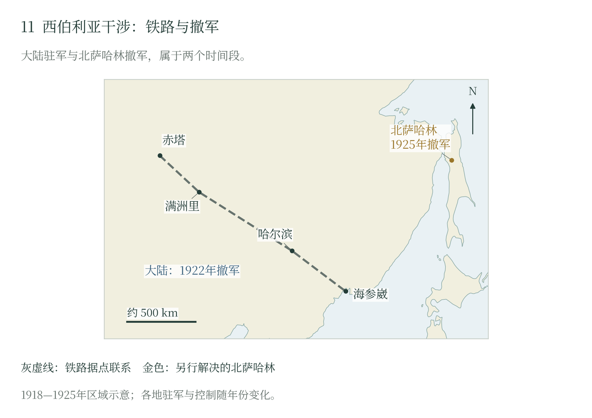

第十章 战后合作、西伯利亚干涉与撤军
战后的合作与新的断裂
朴次茅斯和约以后，日本需要巩固战果，俄国也要保住远东尚存的权益。继续竞争会增加驻军与外交成本，相互承认既得利益，则能使铁路、港口和边境获得较稳定的经营环境。1907年7月30日，两国签订协约，公开承诺尊重彼此领土以及以机会均等原则为限的现行条约权利，同时承认中国独立、领土完整和各国工商机会均等。本野一郎与伊兹沃尔斯基代表两国完成的这项妥协，把战后的戒备转向有条件的合作。〔1〕
合作的具体办法写在同日秘密协约里：双方按约定分界，分别约束自己在对方一侧满洲寻求铁路、电信权益的行动，并承诺不妨碍对方支持的申请；俄国承认日本与朝鲜之间既有的政治关系，并答应不干涉其发展，日本则承认俄国在外蒙古的特殊利益。两国通过约束彼此的竞争，减少了再次冲突的诱因，也使中国、朝鲜和蒙古地区成为相互让步的对象。公开维护中国完整与私下协调权益，在这套政策中同时存在。和平确实降低了日俄之间的战争风险，地区社会却承担了强国合作所巩固的支配关系。〔2〕
到1916年7月3日，合作又向共同维护权益推进。新协约公开规定，双方不参加针对对方的政治安排；一方在远东的领土权或经对方承认的特殊利益受到威胁时，两国应协商支持与合作措施。昔日敌手已把对方纳入自身安全安排，以磋商应对外部压力。这样的和平依赖双方认可现状，也依赖两个政府能够持续掌握军队、履行约定。〔3〕
1917年的革命打破了后一条件。帝制崩溃之后，政权又经历更替；到年底，外交使团面对的是宣布由列宁领导的新政府。托洛茨基向美国大使通知政府成立，并正式提出各战线立即停战、展开不割地不赔款的和平谈判。这套主张使协约国重新估量俄国继续作战的意愿，也使列强必须重新判断同谁交涉、承认谁的权限，以及旧有安排能否落实。〔4〕
内战扩大以后，谁掌握车站、军需和港口，越来越取决于驻在当地的武装。日本面前仍有两条路：通过交涉维护权益，或借驻军与地方盟友增添保障。1918年，协约国以援助捷克斯洛伐克军团、保护军需等理由组织行动，日本也公开承诺尊重俄国领土完整、事成撤军。从合作走向干涉，俄国政权的瓦解提供了机会，日本政府则作出了扩大用兵的选择。 〔5〕
共同出兵中的不同目标
苏维埃政权、反布尔什维克政府和地方武装争夺铁路与城市，协约国试图把俄国内战同尚未结束的世界大战联系起来。远征军以救援、护路和保护军需进入当地，随后支持不同势力，出兵目标也随控制范围扩大。 〔6〕
日本高层对干涉存在分歧。寺内内阁最初较为谨慎，外相本野一郎主张积极行动。1918年4月的出兵意见书使这一主张进入高层讨论；美国后来接受以援助捷克斯洛伐克军团为中心的共同出兵，才为正式行动提供了新的国际框架。〔7〕
美国7月17日备忘录以西线对德战争为优先，允许援助捷克斯洛伐克军团、保护军需，并支持俄国人愿意接受的自卫行动，同时保留任务性质改变时撤军的权利。日本8月声明也承诺尊重俄国领土完整、不干涉内政及目标实现后撤军，并把军团的危险同德奥战俘参加敌对行动联系起来。英国则强调抵制德国支配、恢复俄国力量和经济援助。各国以共同战争组织行动，对驻军规模和推进范围各有打算。〔8〕
军团分散在漫长铁路上，救援必须掌握列车、车站、仓库和港口。美国文件同时考虑军团集中、向西行动及后方保障；只要军团仍被视为重建俄国抵抗能力的支点，护路便可能转为支持内战一方。后来军团回国运输成为中心，继续驻军又需要新的理由。〔9〕
铁路控制与干涉的扩大
日本很快把部队推进到海参崴以外。1918年11月，美国要求驻日大使交涉，认为日军在北满和东西伯利亚的规模已偏离共同出兵的理解，尤其反对其在北满及外贝加尔东部形成排他控制。双方的分歧已经从是否出兵转为谁能控制交通和沿线地区。〔10〕
1919年1月的共同监管方案试图分开这些权限：俄方主持的协约国委员会负责总监督，技术委员会经营铁路，军事运输委员会协调军运，协约国军队承担警备，俄国经理继续留任。外国军队全部撤离后，协议及据此任用的外国专家也应结束任务。纸面分工在现场仍要经过驻军与地方武装的同意。〔11〕
铁路技术委员会主席史蒂文斯在结案报告里列出了调度失灵的缘由。高尔察克军队随意征用车辆和线路；谢苗诺夫势力占用满洲里至上乌丁斯克之间的机车、车间，侵害铁路人员；捷克斯洛伐克方面另设铁路组织，也来争夺调度权。史蒂文斯是在为自己的工作解释成败，报告却留下一个清楚的困境：技术委员会要让列车运行，先得应付沿途能够扣车的武装。 〔12〕
占住海参崴，可以把住增援入口；驻守铁路，能够截断沿线交通；扶持地方武装，则可把军事存在伸入地方政治。日本每向内陆推进一步，就多出一段警备、供粮和交涉的负担。地方盟友也要靠车辆、军需与运输收入养兵。以救援为名进入西伯利亚的部队，逐渐陷入了内战各方的资源争夺。
缓冲政权与中国东北的牵连
反布尔什维克阵营内部，高尔察克争取中央权威，谢苗诺夫依靠地方军事势力，各方在合作中争夺资源。苏俄红军、当地游击队及随后建立的远东共和国人民革命军，也各有组织与整合过程。干涉者面对的是多个政治军事实体，其支持对象和谈判对象会随战局改变。〔13〕
1920年4月6日，远东共和国在上乌丁斯克宣布成立，提出民主自由、多党派和各民族参与的制度安排。宣言列举外贝加尔、阿穆尔、滨海、萨哈林等地域，甚至涉及位于中国领土内的中东铁路附属地；这些是建国时的政治主张，控制能力则随各地军事力量而变化。共和国试图在苏俄与日本之间形成缓冲：要求红军在约定地点停止东进，外国停止援助赤塔的反革命残部，允许新政府进入赤塔，并撤走远征军。〔14〕
日本也使用缓冲与地方联合的语言，却把驻军同侨民保护、朝鲜和满洲安全相联系。双方对赤塔周边的安排因而指向不同目标：远东共和国要求解除日本对地方敌对势力的支持，日本则希望阻止被其认定为威胁的力量接近边境。〔15〕
这种安全观把中国东北与朝鲜卷入干涉。中东铁路上的借道、驻军与护路牵涉中国权利；朝鲜独立运动跨越殖民地边境，又被日本军政机关视为威胁。日本1921年备忘录将滨海驻军同间岛、珲春事件相联，以其对朝鲜行动者的敌对判断为延长驻军辩护。西伯利亚的战争由此增加了中国东北的军事压力。〔16〕
尼港事件与北萨哈林占领
1920年的尼港事件改变了撤军争论。尼港即阿穆尔河口大陆上的尼古拉耶夫斯克。春季交战造成严重伤亡，部分日本军人与居留民被当地游击队拘押。5月末至6月初，游击队在撤离前杀害被拘人员，并焚毁市街。军民的遭遇由此进入日俄交涉，也改变了日本国内关于撤军的讨论。〔17〕
交火责任当时便有争执。日本调查说明把3月战斗与5月杀害连在一起；张力利用中国外交、海军档案的研究，则引述中国副领事3月报告，认为日军发动了新的冲突，并记下撤离侨民的急迫安排。中国舰艇因冰情与航路滞留当地，后来又受到日方援助俄方的指控。对失去抵抗能力者及居民的杀害，成为战斗之外须另行追究的责任，侨民撤运也进入多方外交交涉。〔18〕
日本7月3日声明把三种行动并列：撤离外贝加尔，在海参崴附近和哈巴罗夫斯克保留兵力，并以尼港事件未解决为由占领萨哈林地区若干地点。日本声称俄国尚无适合交涉的合法政府，驻军须等责任问题解决才撤离。北萨哈林占领由此获得了超出捷克斯洛伐克军团救援的新理由。〔19〕
美国在哀悼受害者的同时拒绝接受这一占领理由，并声明不承认非俄国当局对北萨哈林的占领。日本试图以岛上驻军作为交涉担保，美国则坚持将共同出兵同日本新提出的要求分开处理。协约国原有合作已无法涵盖日方延长军事存在的全部目标。〔20〕
分地区撤军与1925年解决
日本的退出经过了不同地区、不同条件。其1921年对美备忘录称，外贝加尔和阿穆尔地区已于上一年撤离，大陆驻军集中到海参崴、尼科尔斯克附近；北萨哈林仍被单列为等待赔偿和政治交涉的问题。1922年10月25日，最后一支日军离开海参崴，远东共和国人民革命军同日进入。大陆撤军随后连接到政权整合，远东共和国于11月并入俄罗斯苏维埃联邦社会主义共和国。〔21〕
大陆撤军以后，北萨哈林的驻军还要继续维持。当地港口受季节和避泊条件限制，原有运输又依靠大陆对岸港口；大陆一撤，这条补给关系也随之改变。留下驻军，就要继续承担运输与天气的风险。日苏准备恢复关系时，岛上这些部队必须有一个去处。 〔22〕
1925年1月20日，北京签署的日苏基本条约为撤离提供框架。第二条确认《朴次茅斯和约》继续有效，1905年形成的南北分界随之保留；第七条规定经驻北京代表通报批准，以最后通报之日生效，再办理正式交换批准书。条约因此在2月26日生效，4月15日正式交换批准书，两个日期对应不同缔约步骤。〔23〕
议定书甲规定日军在气候允许后开始撤离，至5月15日完成；每区撤离后由苏方恢复完整主权，行政交接另订办法。俄方文献集收录的5月14日确认书记载，约定最后分区至当天中午撤军，继而确认全部日军已离开北萨哈林。15日另有行政通知和庆祝记录。军事撤离通过分区移交完成，居民与货物撤运则继续受到融雪泥泞、短促解冰窗口和军运优先的影响；商人、工人及家庭仍须处理财产、税收和旅费问题。〔24〕
驻军撤走之后，争夺留下的经济利益交由合同处理。条约第六条及议定书乙把油田等特许开发置于苏联主权之下：苏方恢复行政权，日本企业仍可通过谈判取得经营利益。日本由此卸去长期占领的负担，也接受了以外交和商业维系部分权益的办法。这次退出使两国得以重建关系。 〔25〕
从合作到对峙：1926—1929
1925 年北京条约解决的是撤军与北萨哈林，没有回答两国在中国东北的利益怎样继续相处。进入 1926 年，苏联结束内战后的恢复逐渐反映到远东：铁路、港口和驻军重新纳入国家计划，远东的军事指挥机构也作了调整。日本方面，关东军继续以满洲为基地，参谋本部的对苏作战研究把远东列为假想方向之一。合作条约仍在，彼此的军事准备却没有停止。
1929 年的中东路事件把这种矛盾公开化。7 月，东北当局接管中东铁路，苏方随即断交并在远东集结兵力。苏军以远东特别集团军为骨干，在满洲里、绥芬河等方向发起进攻，东北军失利；12 月，双方签订伯力议定书，恢复铁路原有共管状态。对日本军界而言，这一事件提供了两个观察点：苏军能够在远东快速集中并组织多方向作战；东北军的指挥与后勤则不足以单独对抗苏军。此后关东军对苏作战研究更重视苏军的动员速度与铁路投送能力。
九一八与伪满洲国：1931—1932
1931 年 9 月 18 日，关东军发动九一八事变，迅速占领沈阳、长春、吉林等地。1932 年 3 月，伪满洲国成立。苏联没有直接介入，并在事实上承认了伪满洲国；1935 年，苏联把中东铁路售予伪满洲国，退出这条铁路的经营。对日方而言，满洲的占领把军事前沿推进到苏联远东与蒙古的边界；对苏方而言，日本军队沿漫长边境相向部署，远东防御的压力随之上升。边境接触线从朝鲜—滨海一线扩展到满洲—远东—蒙古，巡逻、越界与地方摩擦的次数明显增多。
边境军事化与防共协定：1933—1936
1930 年代中期，苏联在远东增加驻军、修筑筑垒地域，日本关东军与伪满洲国军则加强边境守备。边境巡逻、越界、牧场与河流岛屿的争执频繁发生，地方部队的处置权限常常大于中央的控制能力。1936 年 3 月，苏联与蒙古签订互助议定书，把蒙古纳入其远东防御体系；11 月 25 日，日德签订防共协定。苏联判断日本可能配合德国从东西两面施加压力；日本则把苏联视为北方的主要威胁之一。双方都在为下一次边境冲突做组织准备，而中央的“不扩大”方针与战区的行动之间，始终存在缝隙。
全面侵华与苏联援华：1937
1937 年 7 月 7 日，卢沟桥事变，日本全面侵华。中国战场牵制了日本大量兵力与资源，也改变了日本对苏作战的时间表。8 月 21 日，中苏签订互不侵犯条约；此后苏联向中国提供贷款、武器与志愿航空队。对日本而言，北方边境不能空虚，对苏开战的风险与对华战争的消耗同时上升；对苏联而言，援华既是对日牵制，也是避免两线作战的安排。1937 年以后，边境事件继续积累，1938 年 7 月张鼓峰冲突爆发，1939 年 5 月诺门罕战争开始。
小结
从 1907 年的协约到 1937 年的边境对峙，日俄（日苏）关系完成了从“旧敌合作”到“相向部署”的转变。合作依赖彼此承认权益，革命与内战改变了能够履约的政治权力；干涉与撤军之后，苏联恢复远东军力，日本占领中国东北，边境成为两国军事准备的前沿。到张鼓峰之前，问题已经不是“是否会发生冲突”，而是“下一次冲突在哪里、由谁先升级”。这一背景，是第十一章两场边境战争的起点。

海参崴是远征的海上入口，铁路把驻军、地方盟友与资源争夺连在一起。日军1922年撤出大陆，北萨哈林则经1925年条约与分区交接另行解决。
随文简图 · 自然地理底图：Natural Earth；历史依据见本章注及大图11逐图来源。大图11（图册第11页）
本章注释
- 〔1〕 A701 ↩
- 〔2〕 A701 ↩
- 〔3〕 A702 ↩
- 〔4〕 A703 ↩
- 〔5〕 B203B204 ↩
- 〔6〕 B203B207 ↩
- 〔7〕 B201 ↩
- 〔8〕 B203B204B205 ↩
- 〔9〕 B203B206 ↩
- 〔10〕 B216 ↩
- 〔11〕 B206 ↩
- 〔12〕 B207 ↩
- 〔13〕 B207B214 ↩
- 〔14〕 B214B224 ↩
- 〔15〕 B208 ↩
- 〔16〕 B209B216 ↩
- 〔17〕 B219B220 ↩
- 〔18〕 B219B220 ↩
- 〔19〕 B217 ↩
- 〔20〕 B218 ↩
- 〔21〕 B209B210B223 ↩
- 〔22〕 B221 ↩
- 〔23〕 B211B215 ↩
- 〔24〕 B215B222B221 ↩
- 〔25〕 B211B215 ↩